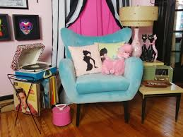
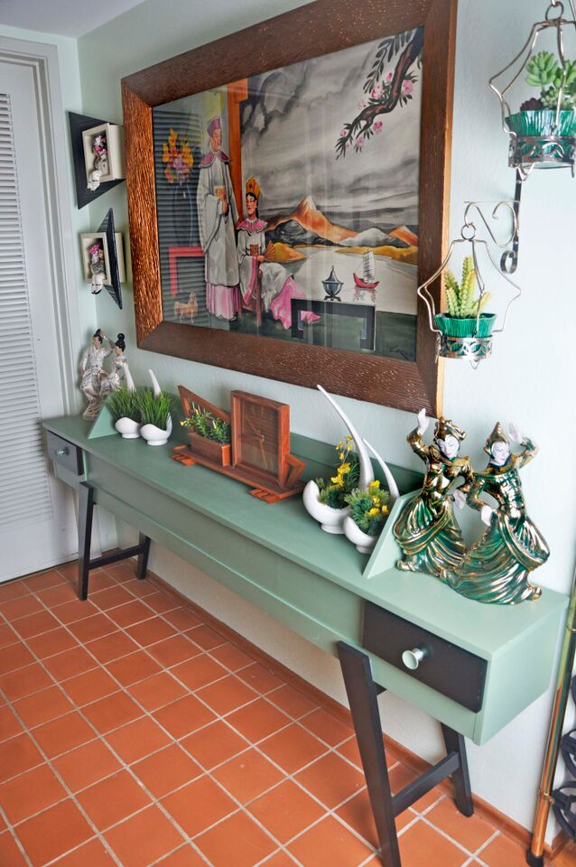
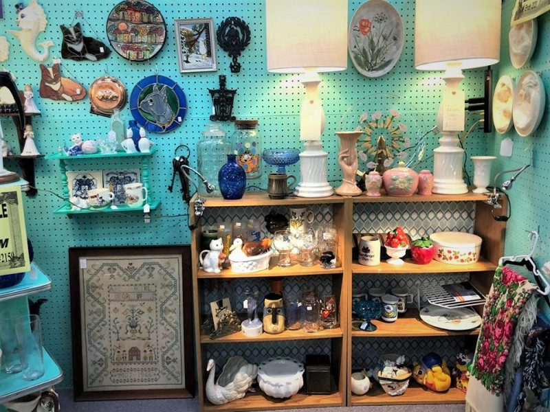
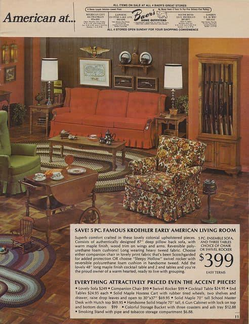
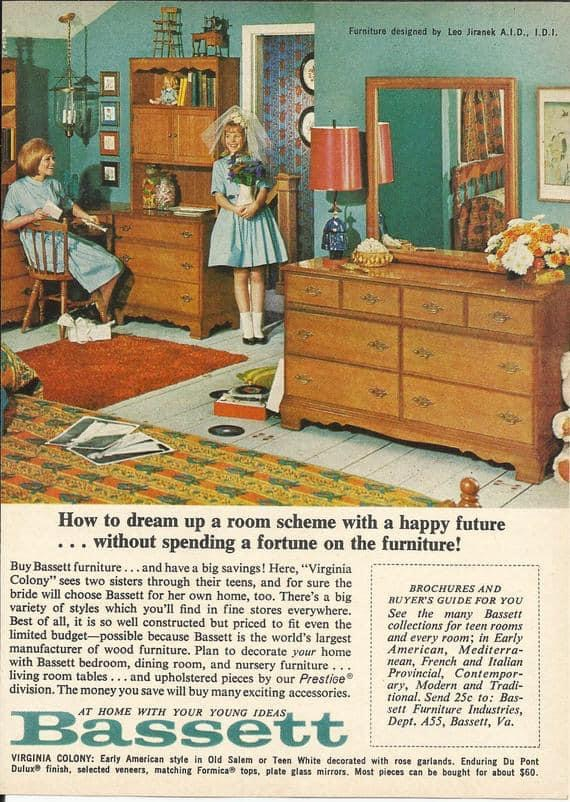
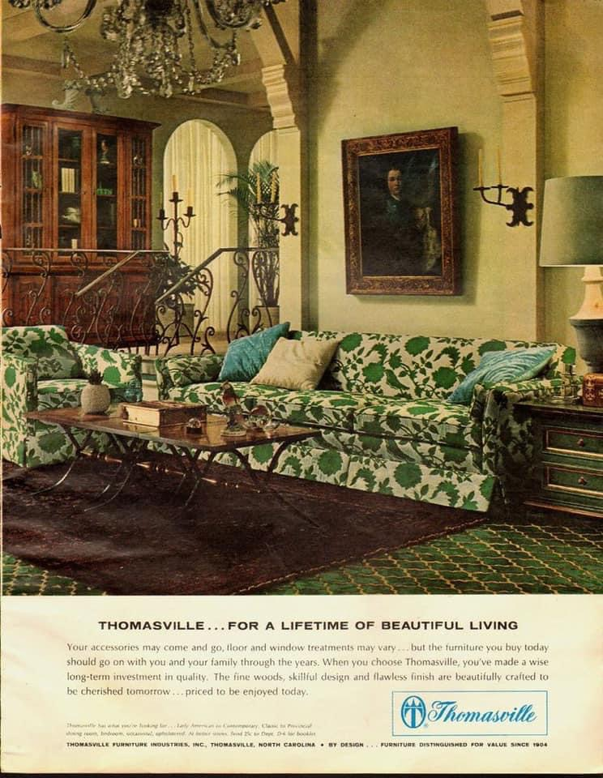
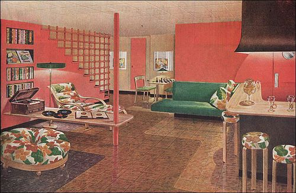
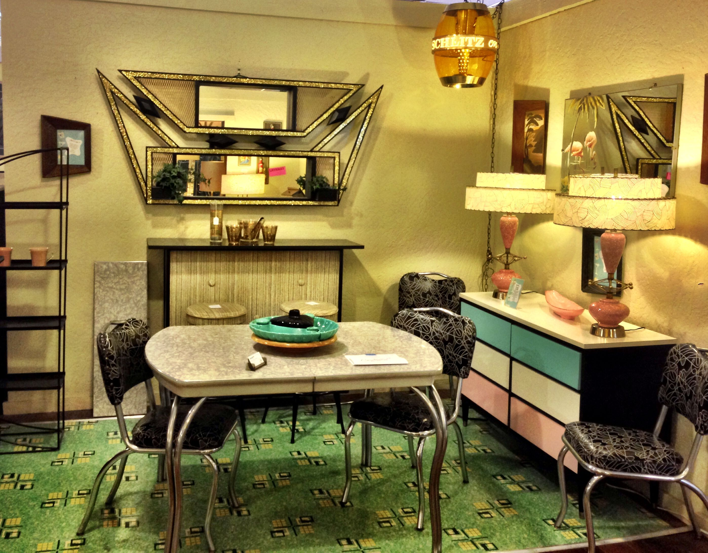
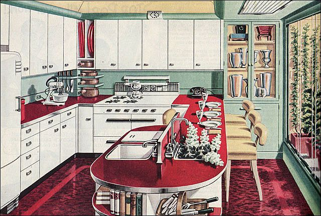

All Mid Century IS NOT Mid Century Modern
There were many other, smaller, furniture and design movements during this time period. These are often mislabeled as mid century modern, this is not correct. These movements are less high-quality and less saught after.
The Other Main Three Mid Century Movements
- Mid Century Kitsch
Although Kitsch is a general term applied to many designs, in this tense it refers to the kitsch-ness of any items from the mid century era. These items are often synonymous with works like tacky or ornimental. The most mid century kitsch pieces differ from mid century modern due to their inorganic and bold nature.
   - Mid Century Colonial/Early American
This subgenre of mid century furniture is often referred to as "coloniAWFUL". It is a movement that aimed to include revolutionary war influence. This resulted in dark colors, american accents (eagles/war documentation), and downright horrid prints. There is much less sleek and slender lines than MCM. This movement is collected for mostly ironic purposes today.
   - Mid Century Traditional
This design movement is most similar to mid century modern, which makes it the most incorrectly labeled. Although most of the basic layers of MCM remain, there are various characteristics that set it vastly apart. Primarily, one can identify this by looking at the quality and design. Generally it is a cheaper made piece that lacks the depth that more modern pieces have. It is widely collected since the pricetags are marginally less than MCM pieces.
  